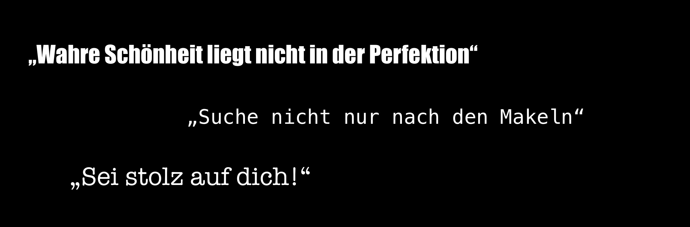

Projektübersicht
Viele junge Frauen kennen das alltägliche Dilemma: Der Blick in den Spiegel wird zur Suche nach vermeintlichen Unvollkommenheiten,
und der Fokus richtet sich auf Makel. Das Streben nach Makellosigkeit gewinnt oft die Oberhand.
Unser Projekt zielt darauf ab, diese fest verwurzelte Selbstkritik zu durchbrechen und Frauen mit einer überraschenden Perspektive zu konfrontieren.
Anstatt ausschließlich nach Makeln zu suchen, sollen Frauen durch eine abstrakte Verzerrung ihres Spiegelbilds dazu ermutigt werden, ihre eigene Schönheit in einer neuen, einzigartigen Dimension zu betrachten.


Unsere Idee: Nach dem Blick in den Spiegel erscheint ein abstrakter, verzerrter Filter, der das Gesicht für einige Sekunden verändert. Gleichzeitig erhält die Person ein inspirierendes Kompliment oder Zitat, das zur Reflexion über traditionelle Schönheitsstandards anregt und die eigene Einzigartigkeit hervorhebt. Ein einfacher, aber kraftvoller Ansatz, um Selbstzweifel zu durchbrechen und ein positives Selbstbild zu fördern.

.jpeg)
Das Ziel
Aufgabenstellung:
"Wählt eine Person oder Gruppe, die ihr emotional erreichen möchtet. Es sollte niemand sein, den ihr gut kennt.
Konzipiert ein (hybrid) diigtales Werk, das diese Person oder Gruppe berührt."
Darauf basierend ist es unser Ziel, ein Bewusstsein zu schaffen, das junge Frauen dazu ermutigt,
sich selbst weniger selbstkritisch zu betrachten.
Durch die Integration eines abstrakten, verzerrten Filters im Spiegel möchten wir eine neue Perspektive schaffen,
die traditionelle Schönheitsideale herausfordert.
Wir streben danach, Selbstakzeptanz zu fördern und individuelle Schönheit in all ihren Facetten zu feiern.

Die Umsetzung
Die abstrakten verzerrten Filter wurden in Meta Spark Studio erstellt. Im Patch Editor wurden verschiedene Assets aneinandergebunden und angepasst, bis am Ende der gewünschte Filter entstanden ist. Zusätzlich wurde ein halbdurchlässiger Spiegel in einem DIY-Projekt gebaut. Dafür wurde ein einfacher Bilderrahmen mit Glas und eine Spiegelfolie verwendet, die auf das Glas geklebt wurde.